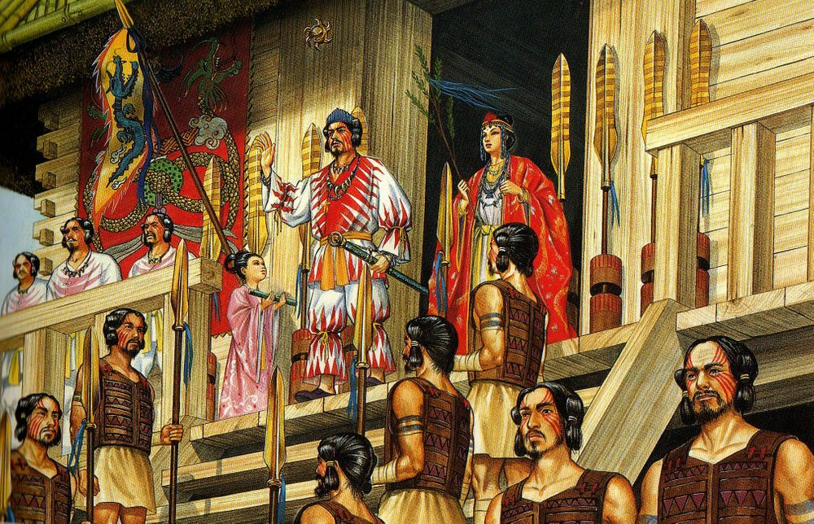

구석기 시대 일본은 한반도 및 타이완, 남중국과 육지로 연결되어 있었으며, 이후 해수면이 상승하면서 이곳의 주민들은 고립되어 일본 원주민을 이룬다.
고대시대
일본의 구석기 시대는 약 12만 년 전에 시작한다.이 시기의 유물이나 화석인류는 그다지 많이 남아있지 않은데, 일본의 지각 변동이 심하다는 점, 산성 화성암 토양이기 때문에 유골이 남기 힘들다는 점 등이 이유로 꼽힌다.
일본이 국가로서 틀을 잡은 6~7세기 아스카 시대에는 쇼토쿠 태자가 불교를 공인하는 한편, 견수사가 파견되어 한반도를 거치지 않고 직접 중국의 선진 문화를 도입하는 모습을 보여준다.